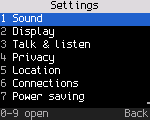
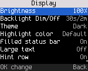
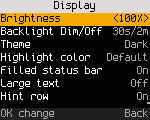
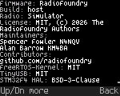
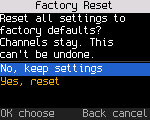
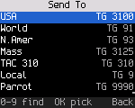

Questa pagina non è ancora tradotta; è mostrata in inglese.
Settings
Open Settings with OK, 7, or with *, 0. Settings are grouped by what they are for. A number key opens a group directly. Find also reaches each setting by name: type its first letters on Home.


Changing a setting
Each row shows its current value.
- On/off and list settings change with OK: each press goes to the next value.
- Number settings open an editor on OK. Change the value with Up and Down (or the channel knob), or type it with the number keys, press OK to keep it, Back to leave it unchanged. A typed value outside the range, or between steps, isn't taken: the radio says "Not changed" with the range.
- A setting takes effect and is saved as soon as you change it. There is no separate save step.

Some settings are on the menu before the feature behind them exists, or don't apply to this radio. They are dimmed. OK on a dimmed row says why. The Status column of each table shows this:
| Status | Meaning |
|---|---|
| Works | Acts now and is kept across power off |
| Works, not kept | Acts now, back to the default after power off |
| Dimmed | Not built yet, or not on this radio. OK says why |
Reference
Sound (key 1)
| Setting | Values | Default | What it does | Status |
|---|---|---|---|---|
| Key tones | On, Off | On | A short beep on each key press | Works |
| Volume | 0 to 16 | 8 | The speaker volume, on radios without a volume knob only (the row is not shown on the others). 0 is mute. The Volume key opens a screen that changes it faster (Radio reference) | Works |
| Tone volume | 0 to 10 | 5 | The loudest the radio's beeps get. Beeps follow the speaker volume up to this level, so turning the volume down makes them quieter too | Works |
| Talk permit tone | On, Off | On | The beep when a DMR transmission starts (DMR) | Works |
| Call end tone | On, Off | On | The two-note beep when a DMR call you heard ends | Works |
| TOT warning tone | On, Off | On | The beep a few seconds before the transmit time-out cuts a transmission | Works |
| Battery tone | On, Off | On | The beeps for a low and a critical battery | Works |
| TX denied tone | On, Off | On | The low tone when the radio refuses PTT or the time-out cuts a transmission | Works |
| Scan stop tone | On, Off | Off | A short beep when a scan stops on a signal | Works |
| Emergency tone | On, Off | On | The warble when the radio hears someone's emergency. Dimmed in a build without DMR emergency | Works |
| Voice prompts | On, Off | Off | Spoken prompts. There is no recorded speech yet | Dimmed |
| Message tone | On, Off | On | A three-note tone when a text message arrives | Works |
| Vibrate | On, Off | On | The radio vibrates for a text message, a call alert, a private call to you and an emergency it hears. Only on radios with a vibration motor (Radio reference) | Works |
Display (key 2)
| Setting | Values | Default | What it does | Status |
|---|---|---|---|---|
| Brightness | 10 to 100 %, steps of 10 | 100 % | Backlight brightness. Also in quick settings, tile 9 | Works |
| Backlight Dim/Off | 5s/20s, 10s/40s, 30s/2m, 1m/4m, 2m/8m, 10s/dim, 30s/dim, 1m/dim, 2m/dim, Never | 30s/2m | Without a key press, the backlight dims to a fifth after the first time and goes off after the second. The "dim" choices dim and never go off | Works |
| Theme | Dark, Light, High contrast | Dark | The screen colors. Not on radios with a monochrome screen | Works |
| Highlight color | Default, Red, Orange, Yellow, Teal, Light blue, Purple, Pink | Default | The color of the selected row or tile and of the channel number on Home. Not on radios with a monochrome screen | Works |
| Filled status bar | On, Off | On | Fills the top status line with the highlight color (light gray with Default, white in the high-contrast theme) and draws its text black. Not on radios with a monochrome screen | Works |
| Large text | On, Off | Off | Home shows only the status line, the channel and the talk target, large | Works |
| Hint row | On, Off | On | The bottom line with key hints | Works |
| Talkgroup name first | On, Off | Off | Home's talk line reads "World TG 91" instead of "TG 91 World": on a small screen the name is what fits. A side key set to TG name / number switches it too. On radios with DMR | Works |
| Language | English, Español, Italiano | English, or the Radio language picked in the web installer | The language of the menus and messages. A factory reset goes back to that default. The list shows every language RadioFoundry has; one that isn't in your firmware is dimmed. Pick it when you install with the web flasher to get it (Installing). Names, callsigns and the standard radio abbreviations (TG, CC, VFO) stay as they are | Works |
Talk & listen (key 3)
| Setting | Values | Default | What it does | Status |
|---|---|---|---|---|
| Reply window | 0 to 30 s | The codeplug's hang time, else 10 s | How long PTT answers the last call (DMR). 0 turns it off | Works |
| TX timeout | Off, 30 s, 1, 2, 3, 5, 10 min | 3 min | Longest transmission, for channels without their own timeout in the codeplug | Works |
| Default squelch | 0 to 9 | 5 | The FM squelch level when a channel doesn't set one | Works |
| VFO step | Auto, 2.5, 5, 6.25, 8.33, 10, 12.5, 20, 25, 50, 100 kHz | Auto | The step of Up, Down and the knob in the VFO. Auto is 25 kHz at width 25K and in AM, else 12.5 kHz. Only on radios with a VFO | Works |
| FM broadcast step | 200 kHz, 100 kHz | 200 kHz | The VFO step in the broadcast band. 200 kHz lands on the odd tenths (88.1, 88.3), the stations in the Americas. You can still type any frequency. Only on radios with a broadcast receiver (Air band and FM broadcast) | Works |
| Mic gain | 0 to 10 | 5 | Microphone level, 2 dB a step. 5 is the radio's normal level. Sets DMR, and FM on the radios that set the level in their microphone path (Radio reference). A change counts from the next transmission. Shows "AGC" and can't be changed while Mic AGC is on | Works (DMR); FM not checked on air |
| Mic AGC | On, Off | Off | Evens out your level on DMR: a quiet voice is raised and a loud one lowered, so you don't need to set Mic gain. While it's on, Mic gain stays at 5. Dimmed on radios whose voice codec can't do it | Needs an on-air check (DMR) |
| Mic noise reduction | On, Off | On | Reduces steady background noise (fans, engines, wind) in what you send on DMR, also between words. Turn it off if a steady sound you want heard is cut. Dimmed on radios whose voice codec can't do it | Needs an on-air check (DMR) |
| Monitor by default | On, Off | Off | Digital monitor (DMR: every talkgroup, promiscuous) goes on each time you select a DMR channel, and a scan started from it keeps it on at every channel. Back on Home turns it off until the next channel | Works |
| Show talker alias | On, Off | On | Show received talker aliases (names) under the caller's ID | Works |
| Dual watch talk back | On, Off | Off | Off: a call on the other channel never moves PTT. On: when a call ends on the other channel, that channel becomes the selected one for 10 s (restarting with each reply and call there), so PTT answers there (Dual watch) | Works |
| Dual watch delay | 0.5 s, 1 s, 1.5 s, 2 s, 3 s, 5 s | 1 s | How long dual watch stays on a channel after a call ends, for the reply. It looks at the other channel meanwhile and shows Busy there (Dual watch) | Works |
| SFR receive | Repeater, First copy, Dual-path RX | Repeater | Experimental. What a single frequency repeater user plays (Standalone SFR). Repeater: only the repeater's copy. First copy: the talker's or the repeater's copy, whichever arrives first. Dual-path RX: both copies, with each damaged voice frame taken from the other copy. Dual-path RX is missing from builds without it | Works (Repeater). First copy and Dual-path RX depend on the radio: some hear only one copy at a time (Radio reference) |
| SFR CW ID | Off, 5, 10, 15, 30 min | Off | Experimental. How often a single frequency repeater channel sends its callsign in Morse (Standalone SFR). The callsign is the radio name's first word (before a space, - or /), and only if it looks like one: 4 to 7 letters and digits, at least one of each. Otherwise nothing is sent. The ID goes out in FM on the channel once the repeater has carried traffic and has been quiet for 2 s, at most once per interval. Missing from builds without it |
Works |
Privacy (key 4)
| Setting | Values | Default | What it does | Status |
|---|---|---|---|---|
| Key type | Off, Motorola, Anytone | Off | The kind of basic privacy key (DMR). Off removes the key | Works |
| Key | Motorola 1 to 255, Anytone 0 to 65535 | The key value, typed with the number keys. Dimmed until a type is chosen | Works |
Location (key 5)
| Setting | Values | Default | What it does | Status |
|---|---|---|---|---|
| GPS | On, Off | On | The GPS receiver, on radios that have one (Radio reference). Off powers the module down and the radio has no fix (APRS and DMR use the computer's or the fixed position); the change takes effect at once. Without GPS the row is dimmed and says "No GPS on this radio" | Dimmed without GPS |
| Position format | Degrees, Deg min sec, Grid | Degrees | How positions are shown | Dimmed without GPS |
| Send position | Off, 1 min, 5 min, 15 min | Off | Send your position at this interval | Dimmed without GPS |
| Answer GPS requests | On, Off | On | Answer LRRP location requests (Find also finds it as "position"). With no position the answer is "no fix" | Works |
| Position source | Auto, GPS, Computer, Fixed | Auto | Where your position comes from, for DMR calls, location requests and APRS. See Position below | Works |
| Fixed position | Latitude, Longitude | Not set | A position you type in, for a radio without GPS or one that stays in place (how to type it) | Works |
| Send in DMR calls | On, Off | Off | Put your position into your DMR voice calls (DMR) | Works |
Position
Your position is used by DMR calls (Send in DMR calls), by location requests from a dispatcher (Answer GPS requests) and by APRS. None of them needs the others: a radio without APRS still reports its position over DMR.
- Auto takes a fresh GPS position, else the computer's, else the fixed one.
- GPS, Computer and Fixed take only that one.
- Computer is offered on firmware with APRS, which reads the computer's GPS over USB (APRS).
- The settings are saved and are back after the radio restarts.
Connections (key 6)
| Setting | Values | Default | What it does | Status |
|---|---|---|---|---|
| Hotspot allowed | On, Off | On | Lets a hotspot host on USB put the radio in hotspot mode (Hotspot) | Works |
| Answer radio checks | On, Off | On | Answer radio checks from other radios (Radio check) | Works |
| Answer call alerts | On, Off | On | Acknowledge call alerts, so the caller knows the page arrived | Works |
| TFTP codeplug write | On, Off | On | Lets a computer write the codeplug over TFTP in USB network mode (USB network). Reading is always possible | Works |
| Message format | ETSI, ETSI short, Motorola (where built) | ETSI | The encoding of new DMR text messages (Messages) | Works |
| Accept zone shares | On, Off | On | On shows a zone or channel another radio sends you, to import or reject (Sharing a zone). Off ignores them | Works |
| USB network at start | On, Off | Off | The radio starts as a USB network adapter instead of a serial port (USB network) | Works |
| PC answers data | On, Off | Off | Control station mode: while the computer is connected in USB network mode, it answers the data sent to your radio instead of the radio (USB network) | Works |
| USB address | By DMR ID, 192.168.10.x | By DMR ID | The addresses of the USB network link: from your DMR ID, or the fixed pair 192.168.10.1 (radio) and 192.168.10.2 (computer) | Works |
| Data services | ARS server, IP gateway: a DMR ID or Off | Off | Opens a screen with the ARS presence server (ARS) and the gateway radio for other networks (USB network). Type an ID and press OK; 0 is Off. Both are saved in the codeplug | Works |
Power saving (key 7)
| Setting | Values | Default | What it does | Status |
|---|---|---|---|---|
| Battery saver | On, Off | Off | On an idle FM channel the receiver sleeps between short listening windows (Battery and power) | Works |
| Auto power off | Off, 30 min, 1 h, 2 h | Off | Switch off after this time without use (Battery and power) | Works |
| Low battery warning | 5 to 30 %, steps of 5 | 15 % | Warn when the battery falls to this level (Battery and power) | Works |
Keys (key 8)
Tone burst opens FM repeaters that need a 1750 Hz access tone. Assign it to a side key's press slot: tap for 1 second, or hold for longer. It uses the whole key, so its long-press assignment does not run. During PTT the tone replaces the microphone temporarily; releasing PTT stops it. The usual transmit restrictions apply. It gives an error beep on DMR channels or hardware without transmit tones. Availability is in the feature matrix. PTT when locked also controls the Tone burst key; power-off ends the burst immediately without a roger beep. During VOX, the burst runs to completion before the full VOX quiet tail begins. Pressing and releasing the key during a debug-link burst leaves that burst running until its own limit or stop. For a repeater that always needs the tone, turn on Tone burst in the channel's settings instead (Editing a channel): every PTT on that channel then starts with 1 s of 1750 Hz, no key needed.
| Setting | Values | Default | What it does | Status |
|---|---|---|---|---|
| Long press time | 400 to 1200 ms, steps of 100 | 600 ms | How long you hold a key for a long press | Works |
| Key repeat | 60 to 300 ms, steps of 20 | 120 ms | The repeat rate of Up and Down while held | Works |
| Up/Down on Home | Channel, Zone, Talk target | Channel | What Up and Down change on Home. Talk target steps through the channel's contact and its listen list on DMR channels. On FM channels they change the channel | Works |
| One row per key, named as on the radio (SK1, SK2, ...) | Default, Nothing, Monitor, Talk target, Power level, Next zone, Prev zone, Scan, Key lock, Home zone, Tone burst, Copy to VFO, VFO/Channel, Call back, TG name / number | Default | What a press of the key does. Default is what the key roles say. Monitor opens the squelch while you hold the key on FM, and turns digital monitor on or off on DMR. Key lock locks and unlocks the keys. Call back talks to the last call heard. Home zone goes to the codeplug's first zone: put your home zone first in the CPS. Copy to VFO copies the channel to the VFO and opens it (the VFO); in the VFO it says "Already in VFO". VFO/Channel goes between the channel and the VFO, as a VFO/MR key does (the VFO). TG name / number switches Home's talk line between the talkgroup's name first and its number first (Settings > Display > Talkgroup name first). The list offers both on radios with a VFO | Works |
| The key's name and "hold" (SK1 hold, ...) | Default, Nothing, Talk target, Power level, Next zone, Prev zone, Scan, Emergency, Key lock, Home zone, Copy to VFO, VFO/Channel, Call back, TG name / number | Default | What holding the key does. Emergency needs a 1.5 s hold. With Monitor as the press, the hold works on DMR channels; on FM holding the key keeps the squelch open (for an open squelch that stays, use *, 5) | Works |
The list has a row pair for each key the menus don't need; the radio's list says which. On a radio whose arrows are printed P1 and P2, they have rows too: what you set works on Home, and in the menus they stay arrows. They can't take Monitor or Tone burst, which need the key held, or Emergency, which needs a 1.5 s hold. Left at Default they show what they do on Home (Prev zone, Next zone). The key settings are also in the codeplug, so a codeplug written to the radio can set them, and a change here is written to the codeplug.
Key lock (key 9)
When the keys lock by themselves and what still works while they are locked (Key lock).
| Setting | Values | Default | What it does | Status |
|---|---|---|---|---|
| Auto lock | Off, 30 s, 1 min, 5 min | Off | Locks the keys after this time without a key press | Works |
| PTT when locked | On, Off | On | Whether PTT works while the keys are locked. Off: PTT does nothing until you unlock | Works |
| Knob when locked | On, Off | On | On radios whose firmware reads the volume knob only (the row is not shown on the others; see the feature matrix). Whether the volume knob works while the keys are locked. Off: turning it does nothing and shows the unlock hint, and when you unlock, the volume goes straight to where the knob is | Works |
My radio (key 0)
| Setting | What it does |
|---|---|
| DMR ID and name | The radio model, then your DMR ID, the radio name and the two boot screen lines, as stored in the codeplug. On DMR ID, type a new ID with the digit keys (up to 16776415; the IDs above it are reserved for the network) and press OK: the radio writes it into the codeplug and uses it at once, and the Codeplug Editor or qdmr shows it on the next read. Back takes back the last digit, and with none left leaves the ID unchanged. On Radio name, Boot 1 or Boot 2, OK opens text entry (Text entry); OK there saves it, up to 16 characters |
| About | The firmware version, its date and the radio model: the same page as Settings > Advanced > About (below) |
Advanced (last row)
| Item | What it does |
|---|---|
| About | One line each: Firmware ("RadioFoundry"), Release (the release name, such as v26.11; not shown for a build between releases), Build (the commit it was built from), Date (the commit's date, or the build's for a build with local changes) and Radio (the radio model). Then RadioFoundry's license (MIT), its maintainers, where its contributors are listed, and the license of each other part: the third-party libraries and the AMBE+2 codec. The codec shows as "stock": it comes from your radio's own firmware and isn't part of RadioFoundry. The page is text in small print, with nothing cut short and no status bar. The status bar comes back during a call. Up, Down or the knob scroll a page longer than the screen |
| Codeplug | Where the channels come from (built-in or from the CPS), the number of zones and channels |
| Diagnostics | The diagnostics page (also OK, 6, 7) |
| Backlight tests | Only in builds with CONFIG_BACKLIGHT_TEST (Build configuration): a bench tool for measuring the backlight, in English only. OK steps through the pages the radio supports. Compare value: the knob steps 1, Up / Down 50 (1 on a radio whose channel knob has end stops), digits type a value (it applies when it has as many digits as the maximum; # applies a shorter one, Back deletes a digit), * changes the PWM rate, holding OK switches to full and back; it shows the duty and the on and off time each period. Brightness: 0 to 100 % in steps of 10, kept as the Brightness setting (10 % for 0). PWM rate: the rates the radio has, at that brightness; the standard rate again on leaving. How to use them: Backlight curve |
| Factory reset | Puts every setting back to its default (below) |
| Crash log | What the last crash left, and sending it to the developers (below) |
| RX past bands | Only on radios with a range for it: receive above the radio's rated bands, FM only. Off by default. Sensitivity isn't rated there, and the radio never transmits there |
| Freq trim | Moves the radio's receive and transmit frequency together, for a radio that is off frequency. Measure the error (a frequency counter, a service monitor, or a hotspot's BER test) and enter it with the sign reversed. The page shows what the trim comes to in Hz at 440 MHz and 144 MHz: a radio 2 kHz high at 440 MHz takes about -4.5 ppm (-1980 Hz). The page shows the trim in large type over a slider from -10 to +10, with "+ to increase frequency" under it where the display has room. Up and Down (or the knob) step 0.1 ppm, # flips the sign, digits type it (# 4 5 OK is -4.5 ppm). Takes effect once you stop changing it. Only on radios that have it (which radios). Range -10.0 to +10.0 ppm in 0.1 ppm steps, default 0 |
| Hardware | Only on radios that need it: facts about the radio the firmware can't detect, such as a board revision (one the radio detects isn't listed). OK steps through the choices, holding OK stores the one shown. "Not set" shows in the warning color until one is stored, and the radio won't transmit until then. A choice other than the one the radio runs applies from the next start-up |

Advanced > About">
Signaling tones
Settings > Signaling tones has three events, each with its own tone: the start of your transmission, its end, and the idle moment when a reception ends and the channel is free again. DMR and FM are set separately. For each you pick where the tone sounds, and you build the tone yourself, step by step.
Where it sounds (DMR start tone, DMR end tone, DMR idle tone, FM start tone, FM end tone, FM idle tone):
| Output | The tone sounds |
|---|---|
| Default | As before: the talk permit and the call end tone, with their switches in Settings > Sound, and the FM roger beep, which has no menu row yet (a developer turns it on over the debug link, and it is off otherwise). The default is not a fifth place: it means "leave this event as it was before this setting existed" |
| Off | Never, the radio's own tone for that event included |
| Speaker | On your speaker only |
| On air | In your transmission, so the other stations hear it. DMR sends it as voice; FM as a tone on the carrier |
| Speaker + air | Both |
The idle tone has no On air choice: nothing is sent at that moment. An FM start tone on air plays right after the radio keys, before your voice goes out; let go of PTT and it stops.
The tone itself is a chain of up to ten steps per event, like the Frequency and Period rows of a CPS alert tone page. The rows Start steps, End steps and Idle steps show how many steps each chain has ("Standard" when it has none) and open its ten steps:
| Step | Shown as | Values |
|---|---|---|
| Frequency | 1570 Hz |
0 to 3400, in steps of 10. 0 is a pause |
| Length | 40 ms |
0 to 900, in steps of 10. 0 ends the chain: later steps are ignored |
To set a step, press OK on it, type the frequency with the keypad (1 5 7 0) or step it with Up and Down, press
OK, then do the same for the length and press OK again. Back leaves the step as it was. A number off the
steps or out of the range is refused and the message says what fits. A step that was off starts at 40 ms. The whole
chain is cut at 900 ms; the line above the steps shows the length so far. With no step the event plays its standard
sound (the permit beep at the start, the call end beep at the end and when idle). The FM end tone is how you get a roger beep from the menu: set it to On air (or Speaker + air); to match the roger beep exactly, set End steps to 1200 Hz 100 ms and 900 Hz 100 ms. To copy a CPS call tone of 0, 1570,
1050, 1570 and 1320 Hz at 40 ms each, set Start steps 1 to 5 to those pairs. A five tone or ZVEI-style selective call of up to ten tones fits the same way: one step per tone, for example 70 ms each.
- The tones are also saved in the codeplug, so the Codeplug Editor shows them under Radio > Signaling tones, and a codeplug written to the radio sets them. In the editor each event is Not set (the radio keeps its own setting) or Set, with the two outputs and the ten steps. A change from the radio's menu is written to the codeplug as well.
- The start tone on air goes in front of your voice, which starts a little later. The end tone on air goes after you let go of PTT, and the radio stays on the air for it (up to about one second) before it ends the transmission.
- A channel with Talk permit beeps off has none of these tones.
- The tone is sent as a tone frame of the voice codec. A steady tone passes well; fast sequences may sound rough, and other makes of radio may play them differently. Try it with a second radio before you rely on it.
- An end tone on air counts in the transmit time-out.
- On a radio that cannot beep while it transmits, the DMR start tone on the speaker plays just before the radio keys. The FM start tone on the speaker comes from the radio's own tone sidetone where it has one: you hear the tone that goes on air, as it goes. Without that, such a radio has no FM start tone on the speaker.
- Output Default always plays the radio's own tone, whatever the chain says: pick Speaker, On air or both to use it.
Factory reset
Settings > Advanced > Factory reset asks "Reset all settings to factory defaults? Channels stay. This can't be undone." The focus starts on "No, keep settings". Focus "Yes, reset" and press OK.

The reset puts every setting back to its default (brightness, radio settings, the privacy key, the channel position), erases RadioFoundry's own data area, and restarts the radio. The codeplug and the calibration stay.
Crash log
When the firmware crashes, the radio keeps a short record of where and why, and restarts. A radio that stops responding for about 3 seconds counts as a crash too: the record says "Hang". Settings > Advanced > Crash log shows the record: what happened, how many crashes in a row, how long the radio ran and the firmware build. Without a record it says "No crash recorded." Switching the radio off may lose the record: look before you turn it off.

| Item | What it does |
|---|---|
| Send report | Sends the record over DMR to the Send to contact, on the current channel. Takes a few seconds on the air; "Crash report sent" or "Crash report not sent" follows |
| Send to | The contact the report goes to, private or group: pick it from your contacts (type to find) |
| After a crash | Off: nothing happens at the restart. Ask: the radio asks whether to send the report. Auto: it sends the report without asking. Off is the default |
| Clear | Forgets the record |

With After a crash at Ask, the radio asks once after the restart:

Ask and Auto need a Send to contact and a DMR channel the radio may transmit on. The report is at most about 150 bytes and holds no audio, messages or location: only the crash record and the firmware build. Nothing on the air confirms that it arrived.
Settings without a menu
A few settings exist in the radio but not yet on the menu:
- busy channel lockout and the roger beep;
- the scan's resume mode and timing;
- VOX sensitivity;
- the emergency settings;
- the IP data settings (header compression, confirmed data) and the SNMP communities;
- the roaming threshold, hysteresis and periodic search;
- the SFR idle beacon.
Developers change them over the debug link (tools/rfoundry_debug.py radio set ..., data settings ...,
data ip-settings ..., snmp ...). The radio keeps them. The roaming survey and beacon settings are in Tools >
Roaming (DMR).
A build without the Settings menu (CONFIG_UI_SETTINGS=n) shows "Set them with qdmr" instead, and keeps the stored
values.